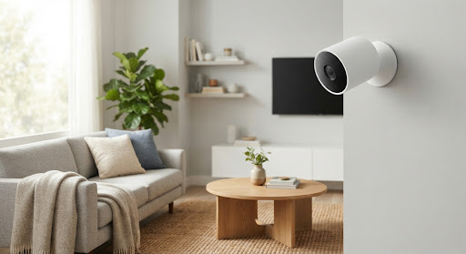
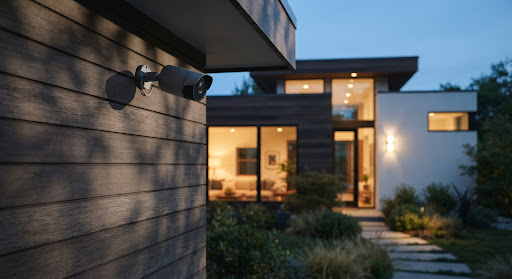
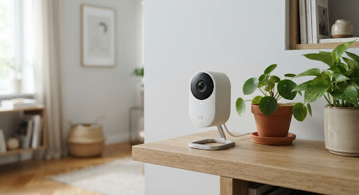

arrow_back
回家
notifications
设备管理
查看家庭盒子同步回来的摄像头状态，App 不直接连接摄像头。
add
添加
security
守护

在线
客厅主视
设备运行正常
settings
tune
规则设置
speed
灵敏度调节

离线
后院监控
设备已离线 2小时
settings
refresh
重新连接

在线
玄关走廊
有人移动 (5分钟前)
settings
tune
规则设置
speed
灵敏度调节
add
添加摄像头
home
首页
security
守护
chat_bubble
消息
volunteer_activism
陪伴
person
我的